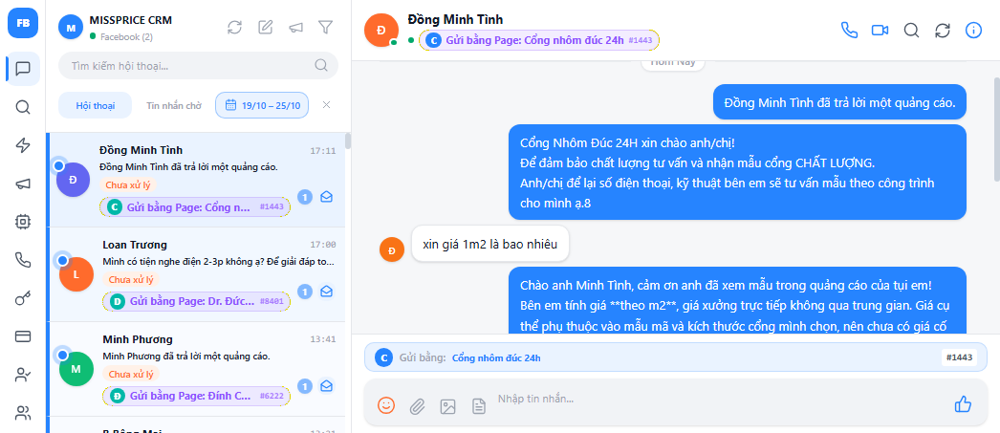
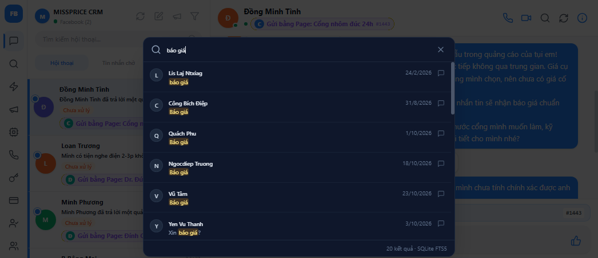
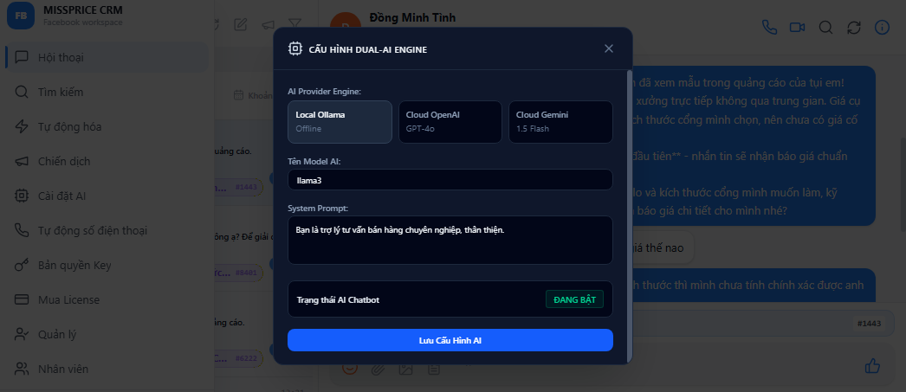
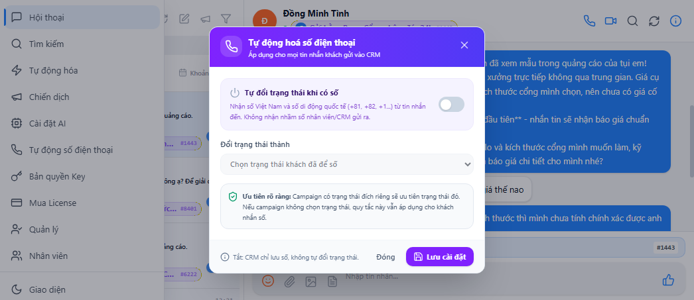

Chức năng
6 nhóm chức năng — đúng theo menu trong app
Mỗi nhóm ứng với một mục trên menu trái của CRM. Bấm vào ảnh để phóng to.
Hội thoại & khách hàng
Hộp thư tập trung 3 cột: danh sách hội thoại bên trái, khung chat ở giữa, thông tin khách bên phải.
- Chưa xử lý & badge chưa đọc — tin mới nổi lên đầu, không bỏ sót khách.
- Bộ lọc khoảng ngày — lịch tự vẽ 1 nút, chọn từ ngày → đến ngày, chip hiển thị ngay trên danh sách.
- Thông tin khách — nút nhanh Gọi · VIP · Nhắc · Lưu, trạng thái chăm sóc, nhãn nhân viên.
- Xuất Excel/CSV — danh sách lead kèm số điện thoại, Page, thời gian hoạt động.

Hội thoại · Khung chat · Bảng thông tin khách với Excel/CSV.

Chọn khoảng 19/10 – 25/10, danh sách tự lọc theo ngày hoạt động.
Tìm kiếm tin nhắn
Tìm toàn văn trong mọi tin nhắn đã đồng bộ — không cần nhớ khách, chỉ cần nhớ từ khóa.
- Tìm theo từ khóa — ví dụ "báo giá" ra mọi hội thoại có nhắc giá.
- Tốc độ cao — đánh chỉ mục FTS5 trong SQLite, kết quả gần như tức thì.
- Bấm kết quả là mở đúng hội thoại — nhảy thẳng tới khách cần tìm.

Từ khóa "báo giá" — kết quả hiển thị hội thoại + nội dung khớp.
Tự động hóa phản hồi
Đặt quy tắc trả lời tự động theo từ khóa khách nhắn — app tự gửi mẫu tin, bạn chỉ lo khách hot.
- Từ khóa kích hoạt — ví dụ "báo giá", "giá bao nhiêu", "địa chỉ".
- Mẫu tin có biến (ten_khach_hang) — tin gửi đi tự điền tên khách, đọc tự nhiên.
- Công tắc bật/tắt từng quy tắc — dễ thử nghiệm và tắt ngay khi cần.

Từ khóa "báo giá" + mẫu tin chèn tên khách, thêm quy tắc mới chỉ vài bước.
Chiến dịch gửi tin hàng loạt
Gửi một mẫu tin cho nhiều khách cùng lúc với kiểm soát tốc độ, theo dõi kết quả từng người nhận.
- Snapshot người nhận — chốt danh sách từ inbox trước khi gửi, biết chính xác đã gửi cho ai.
- Cấu hình gửi — thứ tự, nghỉ giữa các tin để tránh bị Facebook hạn chế.
- Thống kê phản hồi — đã gửi · đã trả lời · đã đưa SĐT · tỷ lệ phản hồi từng chiến dịch.

Chọn người nhận + soạn tin.

Tiến độ + kết quả từng người.

Đã trả lời · Đã đưa SĐT · Tỷ lệ.
Cài đặt AI (Dual-AI Engine)
Chọn "bộ não" trả lời khách: AI chạy ngay trên máy bạn hoặc AI đám mây — đổi qua lại bất cứ lúc nào.
- Local Ollama — chạy trên máy, miễn phí, dữ liệu không rời máy.
- Cloud OpenAI / Cloud Gemini — chất lượng cao khi cần, điền API key là dùng.
- System Prompt riêng — dạy AI giọng văn, kịch bản bán hàng của bạn.

3 engine + system prompt — bật engine đang dùng ngay trên thẻ.
Tự động số điện thoại
Quét tin nhắn để bắt số điện thoại khách tự động — hết thời gian copy từng số bằng tay.
- Nhận diện số VN & quốc tế — chuẩn hóa E.164 (ví dụ +81…, +84…), bỏ số điện, số rác.
- Tự lưu vào contacts — số tìm thấy gắn luôn với hội thoại của khách.
- Đồng bộ với chiến dịch — thống kê "Đã đưa SĐT" của chiến dịch dựa trên dữ liệu này.

Bật quét số, cấu hình quy tắc nhận diện theo nhu cầu.